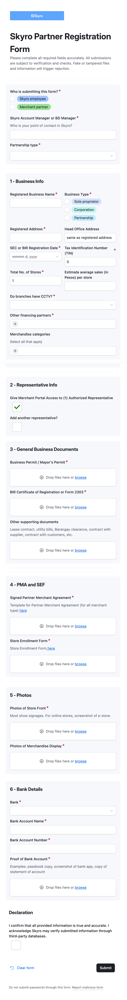

Задача 1 · Лендинг продукта
SkyroCredit — лендинг продукта
Лендинг для запуска нового продукта SkyroCredit — десктоп и мобайл. Задача: за секунды показать незнакомый продукт, донести ключевые цифры и удержать голос бренда skyro.ph (яркий, с юмором, дружелюбный, но технологичный).
Проблема
SkyroCredit — непривычный продукт: возобновляемая кредитная линия без пластика, оплата сканом QR Ph. Его легко спутать с обычным кредитом или картой. Нужно за секунды объяснить незнакомую механику, сделать её желанной и при этом удержать игривый голос бренда.
Что должен сделать лендинг
- Показать, что это — линия в приложении, оплата по QR, возобновляемость
- Донести ключевые цифры — 0% на 45 дней, 1% кэшбэк, обновление каждые 30 дней
- Удержать тон и визуал бренда
Ключевой инсайт: подавать продукт не как «ещё один кредит», а через его отличия и мягкое позиционирование, снимающее стигму заимствования.
Исследование
- Статьи и кейсы по кредитным продуктам и банковскому UX. Переносимые практики: объяснять термины простым языком, держать калькулятор прямо на странице оформления, упрощать форму, давать понятные подсказки.
- Конкуренты. Как подают похожие продукты Альфа-Банк и Т-Банк («Деньги до зарплаты»): позиционирование, онбординг, прозрачность условий и тон.
- Продукт и бренд. Механика: оплата сканом QR Ph, 0% до 45 дней, 1% кэшбэк на покупки от ₱100, проценты только на потраченное, обновление каждые 30 дней. Бренд skyro.ph — голос «boss», таглиш, синий + лаймовый акцент, жирный гротеск.
- Страхи кредитных продуктов. Скрытые комиссии, «подводные камни», непрозрачность → нужна прозрачность условий.
Гипотезы и решение
Каждую гипотезу закрывали конкретным блоком лендинга.
1. «Fund», а не «loan»
Если позиционировать продукт как деньги наготове, а не как кредит, снимем стигму заимствования и станем психологически ближе.
Сделали: заголовок «Your backup fund is ready, boss» + связка «Not a loan you have to apply for — a credit line that's always on standby».
2. Наглядный интерактивный калькулятор
Если человек сам подвигает сумму и увидит вживую 0% и начисляемый кэшбэк, незнакомая механика станет понятнее и желаннее, чем от текста.
Сделали: калькулятор — двигаешь сумму, видишь 0%, срок и живой кэшбэк; переключатель Pay in 45 days / Installments.
3. Максимально простое получение
Если на старте не запрашивать лишнего и свести вход к одному действию, порог входа падает и до заявки доходит больше людей.
Сделали: заявка стартует с одного поля — номера телефона («Start with your number»), остальное спрашиваем позже.
4. Вести отличием продукта
«Кредит без пластика / сканируй и плати / трать-гаси-снова» помогает быстро понять незнакомую механику.
Сделали: мокап приложения (лимит, Scan to pay по QR, кэшбэк, возобновление) + блоки «3 выгоды» и «3 шага».
5. Прозрачность у CTA
«Walang hidden fees» и понятные условия рядом с кнопкой снимают страх «в чём подвох».
Сделали: «No hidden fees · your data stays safe» рядом с кнопкой; FAQ снимает остальные вопросы.
Метрики успеха
- Понятность — считывают ли, что такое SkyroCredit
- Вовлечённость — глубина скролла и работа с калькулятором
- Конверсия — клик по CTA / старт заявки
- Guardrail — task success и NPS, не уронить
Результаты
Собран цельный лендинг SkyroCredit (десктоп + мобайл) с интерактивным калькулятором — каждое решение привязано к гипотезе. Эффект пока подан как гипотезы: их проверяем юзабилити-тестом перед запуском.
Skyro — merchant onboarding
Мобильный флоу регистрации мерчанта: выбор роли, бизнес-данные, документы и подтверждение — с веткой для Sole Proprietor / Corporation / Partnership. Прототип слева кликабельный — можно пройти весь флоу.

До — форма в Airtable
Мерчанты и BD-менеджеры заполняли одну длинную форму без веток и подсказок — легко ошибиться и пропустить обязательное поле.
Problem
Airtable form on mobile:
- One long scroll without reference points — the user doesn't understand how much is left
- Fields in two columns — don't work on a narrow screen
- "Drop files here" — a desktop pattern for file uploads
- No progress indicator — unclear what stage you are at
- Everything at once — Business Info, Representative, Documents, Bank Details in one flow
Research
Before jumping into screens, I ran 5 interviews with merchants and BD managers, plus a short internal survey (12 responses) about the current onboarding process.
Key findings
- Most merchants filled out the form on a phone, often between other tasks — not sitting at a desk
- BD managers said the #1 support request was "how much is left?"
- Sole Proprietor, Corporation and Partnership merchants kept asking about fields that didn't apply to them
- Several submissions were rejected only because a file was attached in the wrong section
Hypotheses
- If we split the form into short steps with visible progress, fewer people will abandon it midway
- If we show only the fields relevant to the selected business type, fewer people will get confused or stuck
- If people can review everything before submitting, fewer applications will come back with errors
Solution
I broke down the form into 6 steps with a segmented progress bar.
Each step represents one topic, one task.
The user can see where they are and how much is left.
Key decisions
- Segmented progress bar at the top
- One column — all fields full-width
- Native upload — "Attach file" button instead of drag & drop
- Conditional logic — screens change depending on the type of business
- Review screen — shows all sections before submission with the option to go back
Screen flow
↓ splits by business type ↓
Sole Proprietor
Corporation
Partnership
↓ merges back ↓
Why does this work?
For the user
- User sees progress — knows how much is left
- Not overwhelmed — one task at a time
- No data loss — can go back and edit on the Review screen
For the business
- Completion rate increases — breaking the form into steps reduces abandonment. Users don't drop off when they see the full form at once
- Data quality improves — conditional logic shows only relevant fields
- Fewer errors, fewer empty required fields
- Processing time decreases — the Review screen lets users verify their data before submitting
Results
+34%
Form completion rate, three months after launch
−42%
Average time to complete the form (from ~16 to ~9 minutes)
−51%
Submissions rejected due to missing or incorrect data